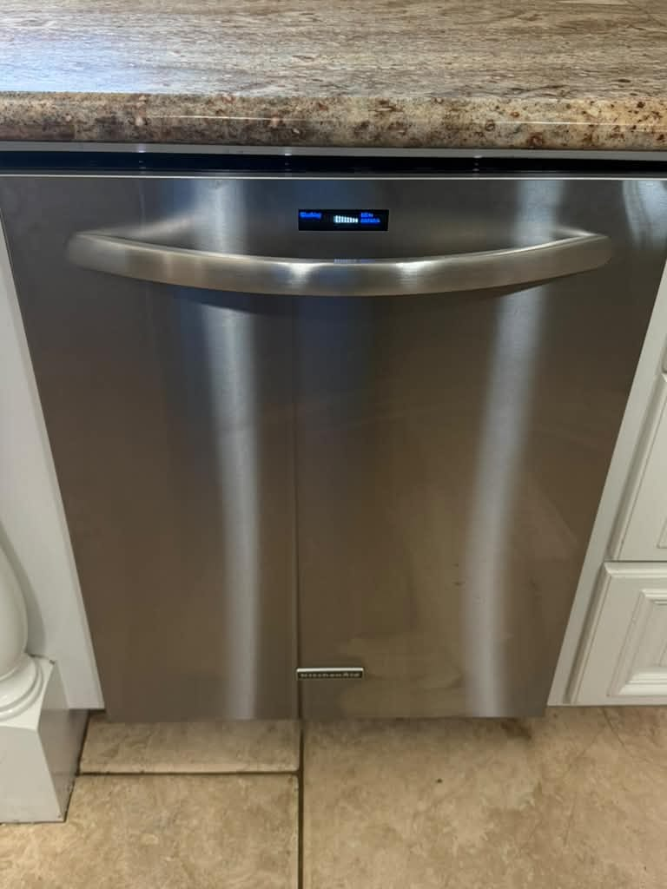

What the Control Board Does in a KitchenAid Dishwasher
Think of the control board as the dishwasher's brain. It takes your button presses and runs the cycle that follows. Parts retailers describe it the same way: Sears PartsDirect's listing for a KitchenAid board says it manages washing, draining and drying, and KitchenAid's own F1E1 error code page lists the control module as a possible cause.
Because it is an electronic part matched to your exact model, a board is ordered by model number, not by symptom. That is why a technician wants the model number before ordering anything, and why the first job is confirming the board is really the problem.
Signs the KitchenAid Dishwasher Control Board May Be Failing
We did not find a KitchenAid list of control board symptoms. The signs below are the ones commonly reported for a failing dishwasher control board, and each of them also has simpler causes, so treat them as a reason to run the checks in the next section, not as a diagnosis.
- A dark or blank display with no response at all.
- Buttons that do nothing, or work only some of the time.
- A cycle that stops partway or never starts, even though the door is latched.
- Beeping or flashing lights with no clear pattern.
If the Clean light is blinking
KitchenAid reports faults by flashing the Clean light. It flashes a number of times, pauses, then flashes again, and the two counts form a code such as F7-E1: the first count is the function number, the second is the error number, according to KitchenAid's error code guide. Its F1E1 page names the control module as a possible cause and says to cycle the power, then schedule service if the code returns. We keep the full read-the-blink walkthrough on our KitchenAid appliance repair page so it lives in one place.
Rule These Out Before Blaming the Board
KitchenAid's own not-starting checklist starts with the basics, and so do we. Each of these takes a minute and costs nothing.
- Control lock. If a lock icon is lit on the display, the controls are locked and the machine will not run.
- Delay wash. A delay setting means the cycle will not begin until the delay time has passed.
- Door latch. Many models will not run unless the door is fully closed and latched. A worn latch or door switch can stop a cycle even when the door looks shut.
- Power. Check that the dishwasher is plugged in, and if it is hardwired, look at its breaker.
- Water supply. If the machine does not detect water, the cycle will not start. Make sure the supply valve is open.
If none of those explains it, a technician still checks the latch switch and the wiring before a board is replaced.
How to Reset a KitchenAid Dishwasher Safely
KitchenAid describes a simple power reset, and it is the one reset we suggest trying:
- Press Cancel to stop any cycle that is running.
- Unplug the dishwasher for at least a minute. A hardwired dishwasher has no plug, so switch it off at its breaker instead. KitchenAid's guidance is about one minute.
- Restore power, close the door firmly, choose a cycle and press Start.
- If the problem returns, stop resetting and schedule service.
A Real Repair: KitchenAid Control Board Replaced in Santa Ana

This photo shows one of our completed jobs: a KitchenAid dishwasher in Santa Ana, CA, with its control board replaced. It sits with our other finished work on the recent repairs page. We show it as a real example that this repair happens, not as a quote for your machine, because every board, model and diagnosis is different. This page does not describe what that particular machine was doing before the repair.
If you are in Santa Ana or nearby, our Santa Ana appliance repair page covers the neighborhoods we serve, and our dishwasher repair service in Orange County lists everything else we fix on dishwashers.
How Much Does a KitchenAid Dishwasher Control Board Replacement Cost?
Estimates vary by brand, part availability, and diagnosis. Final quote is provided before repair. Our diagnostic fee in Orange County is a flat $99, applied toward the repair if you proceed.
| Repair type | Parts cost | Labor | Total range |
|---|---|---|---|
| Control board replacement | $200–$300 | $200–$250 | $400–$550 |
That is our Orange County range for a control board replacement, and it matches the full price table in our dishwasher repair cost guide, which also prices every other common dishwasher repair. The exact figure depends on which board your model takes.
National context, not our prices. As of October 1, 2026, most main control boards for KitchenAid dishwashers were listed at roughly $150 to $215 at RepairClinic, Sears PartsDirect and WhirlpoolParts, with a few up to about $320. Those are national retail part prices, not our parts charge or an installed price. National installed totals for dishwashers in general (not KitchenAid specifically) run $200 to $400 at Angi and $200 to $600 at HomeGuide. Rely on a written quote for your own machine.
Repair or Replace a KitchenAid Dishwasher Over a Control Board?
A common rule of thumb is to compare the repair with half the cost of a comparable new dishwasher. Both Angi and HomeGuide describe it that way, and Angi adds that a dishwasher under about eight years old with a repair under that line is often worth fixing. Angi also puts a new dishwasher with installation nationally at $500 to $1,300, so half of that is roughly $250 to $650. Against that line, a $400 to $550 board repair is more than half the price of a budget replacement and under half the price of a higher-end one, so the answer depends on what you would replace the machine with.
Age, condition, repeat failures and whether the rest of the machine is sound all matter more than the one number. Our repair or replace guide walks through the 50% rule in detail, and our appliance lifespan data shows how long dishwashers typically last, which helps if yours is getting on in years.
Not sure it is the board?
Tell us the model number and what the dishwasher is doing. A technician confirms the cause before any part is ordered, and gives you a written quote before repair. Our $99 diagnostic fee is applied toward the repair if you proceed.
Book a Dishwasher RepairWhat a Service Visit Looks Like
Have the model number ready when you book, along with what the dishwasher is doing and any code it has flashed. At the visit, the technician starts with the simple causes above, the power, the door latch, the controls and the wiring, and tests before replacing anything. You get a written quote before any repair begins.
If the board is the problem, the part is ordered for your specific model, so a control board replacement can need a follow-up visit when the part is not already on hand. We serve homes across Orange County with local technicians, and the written quote tells you whether that part is a same-visit or a second-visit job.
Frequently Asked Questions
Ready to have it checked?
Tell us the model number and what the dishwasher is doing. We confirm the cause before ordering any part, and you get a written quote before repair. Our flat $99 diagnostic fee is applied toward the repair if you proceed.
Book a Dishwasher RepairSources
- KitchenAid Product Help. Dishwasher Not Starting or Not Operating; Dishwasher Error Codes - Reading; F1E1 - Dishwasher.
- Parts retailers, prices as read October 1, 2026. RepairClinic; Sears PartsDirect; WhirlpoolParts. National retail prices, not Universal Appliances Repair prices.
- National cost guides. Angi, dishwasher repair cost (2026 data); HomeGuide, dishwasher repair cost. General dishwasher figures, not KitchenAid-specific.